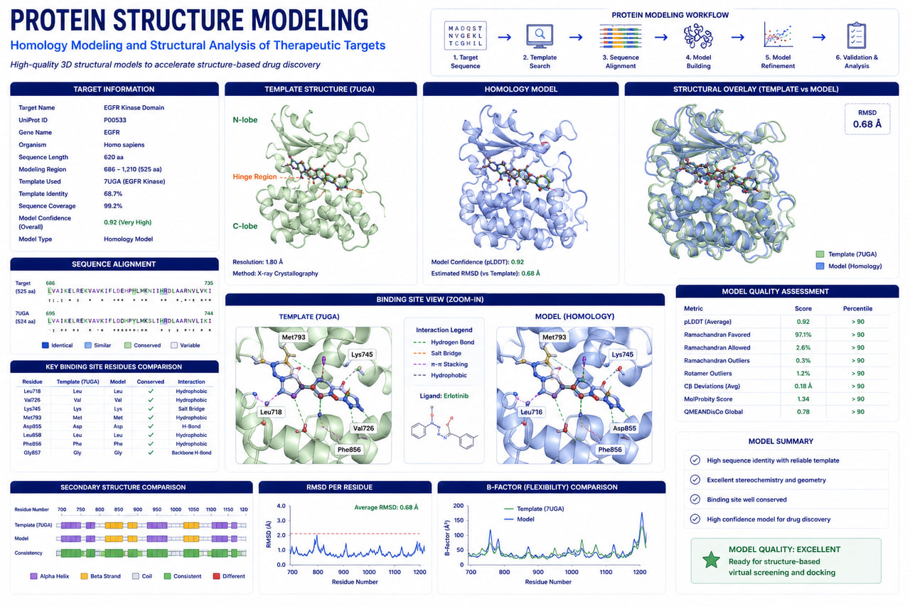

AI-Assisted Bioinformatics
Machine learning-enabled workflows for biomarker discovery, variant prioritization, and predictive genomics.
AI-powered protein structure prediction, structural bioinformatics, and structure-based drug-discovery support.

RASA Life Science Informatics delivers advanced Protein Structure Modeling that combines artificial intelligence, homology modeling, and structural bioinformatics to generate accurate three-dimensional protein structures for therapeutic target characterization and downstream drug discovery.
Using industry-leading platforms such as AlphaFold, I-TASSER, SWISS-MODEL, and Protein Data Bank (PDB) resources, we predict, refine, validate, and analyze structures to deliver biologically meaningful insight into protein function, molecular interactions, and druggability.
Our services support pharmaceutical companies, biotechnology organizations, CROs, and academic researchers across oncology, neuroscience, infectious diseases, rare diseases, and precision medicine.
From sequence to validated, docking-ready structures — the complete structural modeling stack.
Accurate 3D models built from sequence using AI and template-based methods.
Optimized, validated models ready for rigorous downstream science.
Locate and characterize druggable cavities across the surface.
Connect structure to biological function and disease impact.
Production-ready structures for docking, screening and MD.
Machine learning-enabled workflows for biomarker discovery, variant prioritization, and predictive genomics.
Support for Illumina, Oxford Nanopore, PacBio HiFi, and 10x Genomics platforms.
From raw sequencing data to biological interpretation and publication-ready reports.
Deployable on AWS, Google Cloud, HPC clusters, and secure on-premise environments.
Built using Nextflow, Snakemake, Docker, and Singularity for enterprise-grade bioinformatics operations.
Get in touch with our team in Pune, India to discuss sample sizes, platform details, and custom bioinformatics pipeline configurations for your research program.
Start a Project